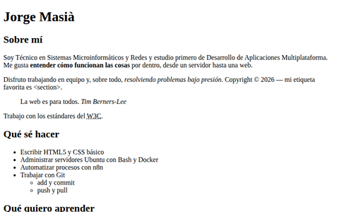
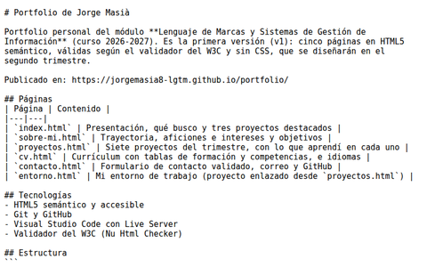
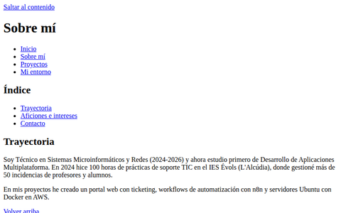
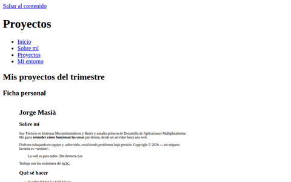
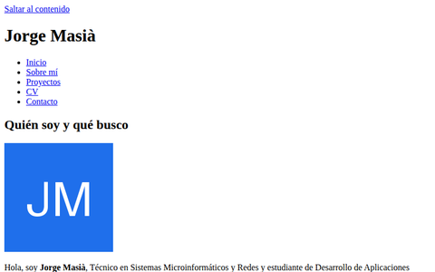
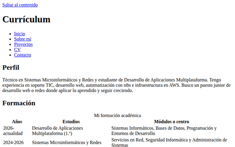
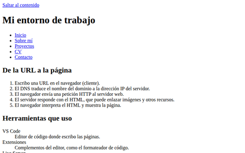

Ficha personal

Actividad 4: ficha personal con estructura, listas y formato de texto.
Qué aprendí: A estructurar una página con encabezados, listas y formato de texto con sentido.

Actividad 4: ficha personal con estructura, listas y formato de texto.
Qué aprendí: A estructurar una página con encabezados, listas y formato de texto con sentido.

Actividad 5: repositorio portfolio con commits y README.
Qué aprendí: El ciclo add, commit y push para guardar mi trabajo y su historial en GitHub.

Actividad 6: menú común, anclas y enlaces especiales.
Qué aprendí: A enlazar varias páginas con un menú común, anclas y enlaces especiales.

Actividad 6: figuras con capturas y rutas relativas.
Qué aprendí: A usar figure y figcaption, rutas relativas y textos alternativos útiles.

Actividad 7: header, main, section, article, aside y footer.
Qué aprendí: A organizar una web con header, main, section, article, aside y footer.

Actividad 7: currículum con tablas accesibles y formulario de contacto con validación nativa.
Qué aprendí: A presentar datos con tablas accesibles y a crear formularios con validación nativa.

Actividad 5: explicación del recorrido de una página web, de la URL al navegador, y de las herramientas que uso.
Qué aprendí: Cómo viaja una página por internet y para qué sirven mis herramientas de trabajo.